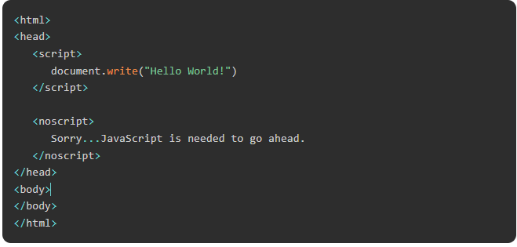

JAVASCRIPTS LÀ GÌ

Bật JavaScript
Tất cả các trình duyệt hiện đại đều có hỗ trợ tích hợp cho JavaScript và nó đã bật JavaScript theo mặc định. Thông thường, bạn có thể cần bật hoặc tắt hỗ trợ này theo cách thủ công. Chương này giải thích cách bật và tắt hỗ trợ JavaScript trong trình duyệt của bạn: Chrome, Microsoft Edge, Firefox, Safari và Opera.
JavaScript trong Chrome
Dưới đây là các bước để bật hoặc tắt JavaScript trong Chrome:
Nhấp vào menu Chrome ở góc trên cùng bên phải của trình duyệt.
Chọn tùy chọn Cài đặt.
Nhấp vào tab Quyền riêng tư và Bảo mật từ thanh bên trái.
Nhấp vào Hiển thị cài đặt nâng cao ở cuối trang.
Tiếp theo, nhấp vào tab Cài đặt trang web.
Bây giờ, cuộn xuống cuối trang và tìm phần nội dung. Nhấp vào tab JavaScript trong phần nội dung.
Tại đây, bạn có thể chọn một nút radio để bật hoặc tắt JavaScript.
Ngoài ra, bạn có thể thêm URL của trang web tùy chỉnh để chặn và bỏ chặn JavaScript trên các trang web cụ thể.
JavaScript trong Microsoft Edge
Dưới đây là các bước đơn giản để bật hoặc tắt JavaScript trong Microsoft Edge của bạn:
Nhấp vào menu Edge (ba dấu chấm) ở góc trên cùng bên phải của trình duyệt biên.
Làm theo Công cụ khác Tùy chọn Internet từ menu.
Chọn tab Bảo mật từ hộp thoại.
Nhấp vào nút Mức tùy chỉnh.
Cuộn xuống cho đến khi bạn tìm thấy tùy chọn Tập lệnh.
Chọn Bật nút radio trong Tập lệnh đang hoạt động.
Cuối cùng nhấp vào OK và ra ngoài.
Để tắt hỗ trợ JavaScript trong Microsoft Edge, bạn cần chọn Tắt nút radio trong Tập lệnh đang hoạt động.
JavaScript trong Firefox
Dưới đây là các bước để bật hoặc tắt JavaScript trong Firefox:
Mở một tab mới nhập about: config trong thanh địa chỉ.
Sau đó, bạn sẽ tìm thấy hộp thoại cảnh báo. Chọn Cẩn thận, tôi hứa!
Sau đó, bạn sẽ tìm thấy danh sách các tùy chọn cấu hình trong trình duyệt.
Trong thanh tìm kiếm, nhập javascript.enabled.
Ở đó, bạn sẽ tìm thấy tùy chọn bật hoặc tắt javascript bằng cách nhấp chuột phải vào giá trị của nút chuyển đổi chọn tùy chọn đó.
Nếu javascript.enabled là true, nó sẽ chuyển đổi thành false khi nhấp vào chuyển đổi. Nếu javascript bị tắt, nó sẽ được bật khi nhấp vào chuyển đổi.
JavaScript trong Safari
Khi bạn cài đặt trình duyệt web Safari, JavaScript được cài đặt theo mặc định. Nếu bạn đã tắt nó và muốn bật nó, hãy làm theo các bước dưới đây.
Nhấp vào menu safari từ góc trên cùng bên trái.
Chọn tùy chọn trong menu thả xuống. Nó sẽ mở ra một cửa sổ mới.
Mở tab bảo mật.
Chọn hộp kiểm Bật JavaScript trong phần nội dung web để bật javascript. Bạn có thể tắt JavaScript bằng cách bỏ chọn hộp kiểm.
Bây giờ, hãy đóng cửa sổ tùy chọn và tải lại trang web.
JavaScript trong Opera
Dưới đây là các bước để bật hoặc tắt JavaScript trong Opera:
Làm theo Tùy chọn công cụ từ menu.
Chọn tùy chọn Nâng cao từ hộp thoại.
Chọn Nội dung từ các mục được liệt kê.
Chọn hộp kiểm Bật JavaScript.
Cuối cùng, nhấp vào OK và ra ngoài.
Để tắt hỗ trợ JavaScript trong Opera, bạn không nên chọn hộp kiểm bật JavaScript.
JavaScript trong Brave
The Brave nổi tiếng với tính bảo mật và quyền riêng tư. Vì vậy, nó không cho phép chúng tôi vô hiệu hóa JavaScript vĩnh viễn, nhưng chúng tôi có thể tắt JavaScript cho trang web cụ thể bằng cách làm theo các bước dưới đây.
Mở URL trang web để tắt trình duyệt cho nó.
Bây giờ, hãy nhấp vào biểu tượng Brave Shields trên thanh địa chỉ.
Tìm tùy chọn Scripts trong bảng Shields.
Giá trị mặc định của Tập lệnh là Cho phép tập lệnh. Nếu bạn muốn tắt JavaScript, hãy chọn tùy chọn "Block Scripts".
Cảnh báo cho các trình duyệt không phải JavaScript
Nếu bạn phải làm điều gì đó quan trọng bằng JavaScript, thì bạn có thể hiển thị thông báo cảnh báo cho người dùng bằng cách sử dụng thẻ <noscript>.
Bạn có thể thêm một khối noscript ngay sau khối script như sau:

Bây giờ, nếu trình duyệt của người dùng không hỗ trợ JavaScript hoặc JavaScript không được bật, thì thông báo từ </noscript> sẽ được hiển thị trên màn hình.